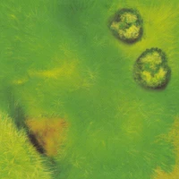
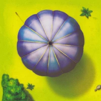
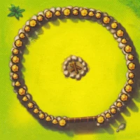
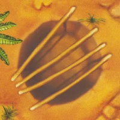
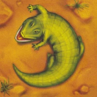
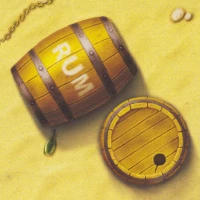
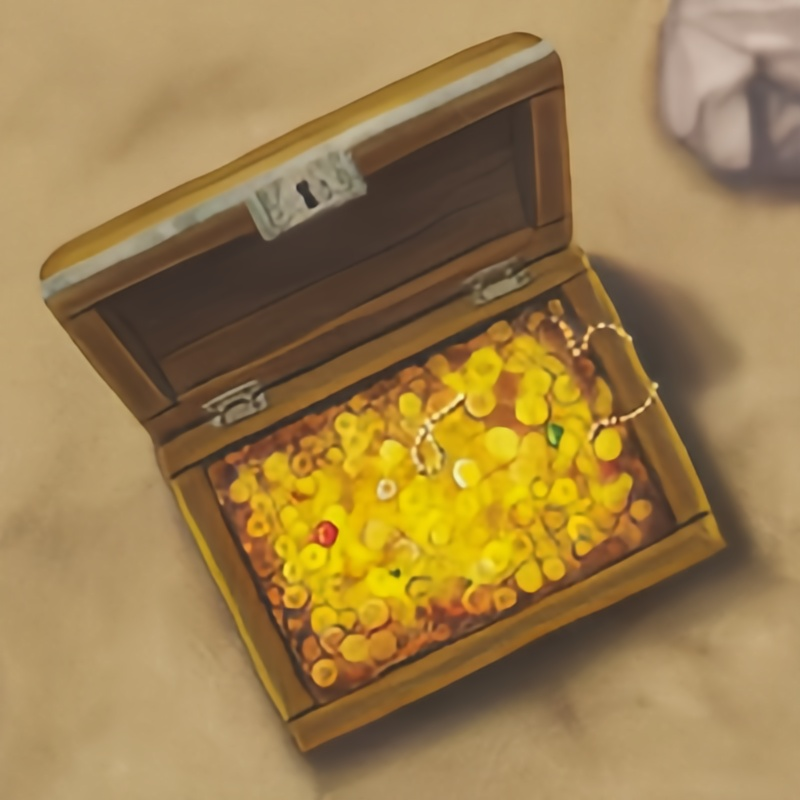

«Шакал» — стратегическая онлайн-игра для всей семьи.
Вы капитан пиратской команды и охотитесь за сокровищами. Перед вами остров, выложенный из клеток. Каждый ход вы двигаетесь на одну клетку. Под ней вас могут ждать золотые монеты или приключение. Ваша задача — перетащить монеты на свой корабль.
Игра закончится, когда на острове не останется монет. Победит тот, кто собрал их больше всех.
Одна из особенностей игры: когда выкладывается остров, клетки ложатся в произвольном порядке. А значит, партия каждый раз будет новая.
Состав игры
77 клеток — из них будет выкладываться остров.
Четыре клетки с кораблями — на них вы причалите к острову.
12 пиратов — по три пирата красного, синего, чёрного и белого цветов.
37 монет — их вы будете таскать на корабль.
Правила игры — их вы сейчас читаете.
Ход игры вкратце
В свой ход вы двигаете одного своего пирата на одну клетку по острову. Переворачиваете клетку и читаете в правилах, что с вами происходит. Выполняете действие, и на этом ваш ход заканчивается. Ваша задача — найти клетки с монетами и перетащить как можно больше монет на свой корабль.
Вместо пирата вы можете сделать ход кораблём по морю.
Игра заканчивается, когда на острове не останется ни одной монеты. Победит самая богатая пиратская команда.
Ход игры подробно
Первый ход определяется случайным образом. Затем все игроки делают ходы по очереди. На каждый ход отводится определенное количество времени, которое устанавливается при создании игры.
Если ваш пират без монеты
Двигайте любого своего пирата по острову на одну клетку в любую сторону.
Заходить и сходить с корабля можно с любой стороны.
Пират не умеет прыгать с корабля и суши в воду.
Если клетка закрыта (то есть лежит рубашкой вверх) — переверните её и прочитайте, что с вами приключилось, в разделе «Значение клеток поля».
Если на клетке чужой пират, то вы его побили: он сразу улетает на свой корабль без монет, если он их нёс. Монеты остаются на клетке. Пиратов было несколько? Они улетают все. Если пират из вашей команды, то вы можете стоять на одной клетке.
После этого передайте ход следующему игроку.
Если ваш пират с монетой
Как только вы найдёте клад, постарайтесь перетащить на свой корабль как можно больше монет. Для пиратов, которые несут монету, правила хода такие:
Можно нести только одну монету на одном пирате.
Можно ходить только по открытым клеткам.
Чтобы побить пирата, нужно оставить все вещи на предыдущей клетке и идти к пирату с пустыми руками.
Если пират несет монету, он не имеет права её оставить. Исключение составляют случаи, когда пират идет сражаться с другими пиратами или открывать новые клетки.
Если вас побили и вы отправляетесь на корабль, то монета остается на клетке, где вы стояли.
Когда пират с монетой заходит на корабль, её теперь не отнять. Монеты на острове может забрать любой пират.
Как плавать кораблём
Вместо того чтобы ходить пиратом по острову, вы можете сделать ход кораблём. Для этого нужно, чтобы на корабле стоял хотя бы один пират.
Передвиньте корабль вдоль своей стороны острова на одну клетку. После этого передайте ход следующему игроку.
Значение клеток поля
Пустые клетки x38
Пират просто заканчивает свой ход. Ничего не происходит.

Воздушный шар x2
Воздушный шар отнесёт пирата (вместе с монетой) на его корабль. И так будет с каждым, кто наступит на эту клетку. Стоять на этой клетке не получается: шар действует мгновенно.

Крепость x2
Пока вы здесь, вы в безопасности: вас никто не может побить. Жаль, что с монетой сюда не зайти. В крепости могут находиться сколько угодно пиратов из своей команды.

Капкан x3
Пират заблокирован — он упал. Пират сидит в капкане и ждёт, когда на клетку зайдёт товарищ из вашей команды: только после этого можно покинуть клетку. Пришедший на выручку пират не попадает в капкан, а помогает выбраться товарищу.

Крокодил x4
Вернитесь туда, откуда пришли, то есть на предыдущую клетку.

Бочка x4
Конечно! Вот перефразированная версия:
Пират пропускает один ход и блокируется на месте. В следующий ход вы ходите другими пиратами из вашей команды. Когда ход завершится, заблокированный пират снова станет доступен для движения.

Сундук с монетами: 1 монета x5, 2 монеты x5, 3 монеты x3, 4 монеты x2, 5 монет x1
Вы нашли клад! На клетке появится несколько монет, которые можно растаскивать по одной.

Конец игры и победа
Когда все клетки открыты и на острове не осталось монет, игра завершается. Победит тот, кто собрал больше всех монет!